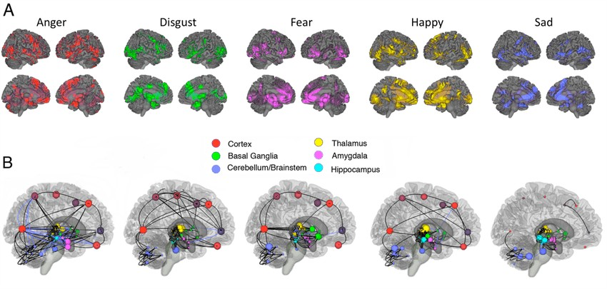
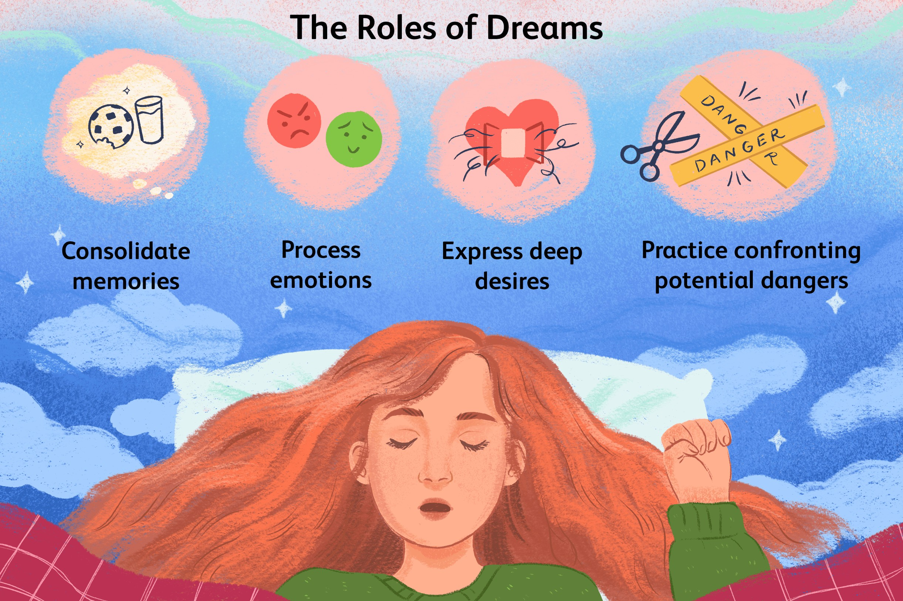
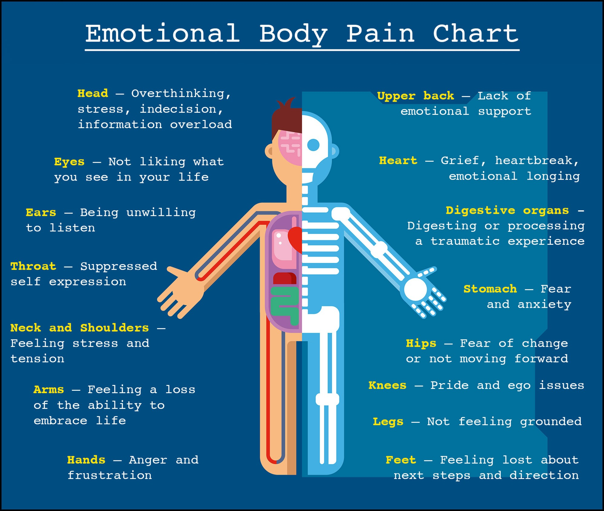
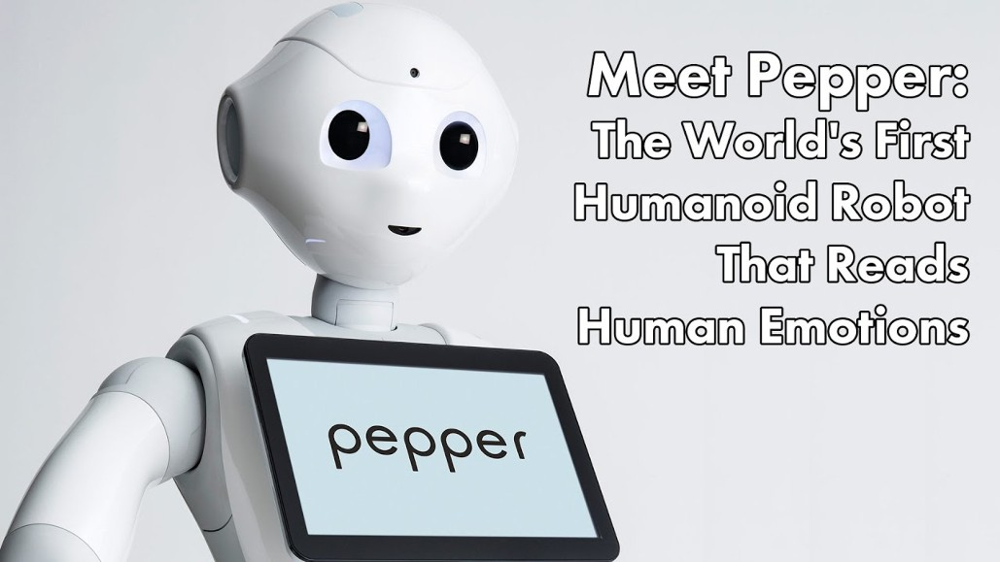
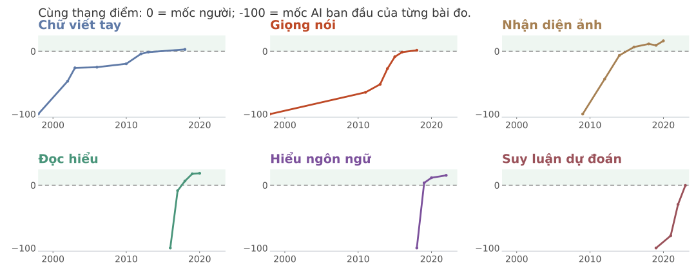
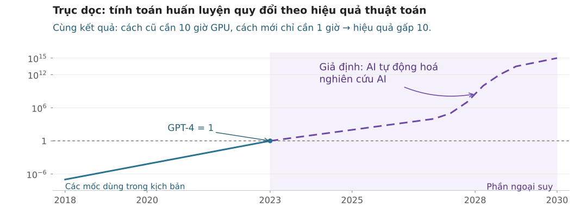

AIT3018 · Học kỳ I, năm học 2026-2027
Viện Trí tuệ nhân tạo · Trường Đại học Công nghệ, ĐHQGHN
Hai đề tài đồ án có điều kiện như nhau. Bạn chọn bằng cách nào?
Đoán xem: trong 52 định lý, chương trình chứng minh được bao nhiêu?
Newell, Shaw và Simon (1958). Bài không có người tham gia: bằng chứng là một chương trình chạy được.
Bài 1958 chưa dùng hai cụm “problem space” và “means-ends analysis”; chúng xuất hiện ở các công trình sau (GPS; Newell và Simon, 1972).
Điều gì đáng làm → đo năng lực bằng gì → cái mới đến từ đâu → nếu máy vượt người
Emotion and motivation: cái gì cho ta biết điều gì đáng làm?
Tim đập, hormone, hệ thần kinh tự chủ.
Cách đánh giá tình huống và trải nghiệm chủ quan.
Nét mặt, giọng nói, cử chỉ, xu hướng hành động.
6:30, bạn đang đi học thì gặp một đoạn tắc đường dài. 7:00 có bài kiểm tra. Mỗi thành phần biểu hiện thế nào?
| Cảm xúc (emotion) | Cảm nhận (feeling) | Tâm trạng (mood) | |
|---|---|---|---|
| Đặc điểm | Phản ứng trước một sự việc | Trải nghiệm chủ quan về trạng thái của mình | Sắc thái cảm xúc kéo dài |
| Thường gặp | Ngắn, gắn với sự việc cụ thể | Nhận ra mình sợ, vui hay bực | Giờ đến ngày; khó chỉ ra nguyên nhân |
| Ví dụ | giật mình khi còi xe vang | “mình đang bực” | cáu cả ngày, chuyện nhỏ cũng bực |
Lúc nhận tin là cảm xúc; buồn lan ra kéo dài thì gần với tâm trạng.
Gặp một con chó đang gầm gừ: tim đập trước, hay thấy sợ trước?
| Lý thuyết | Thứ tự |
|---|---|
| Lẽ thường | Thấy chó→Sợ→Tim đập |
| James-Lange (1884-1885) | Thấy chó→Tim đập→Sợ |
| Cannon-Bard (1927) | Thấy chó→Tim đập+Sợ(cùng lúc) |
| Schachter-Singer (1962) | Thấy chó→Tim đập→Diễn giải: nguy hiểm→Sợ |
| Lazarus (1991) | Thấy chó→Đánh giá: nguy hiểm→Tim đập+Sợ |
Lý thuyết nào giải thích rõ nhất? Vì sao các lý thuyết kia khó hơn?
Schachter và Singer: kích hoạt đến từ caffeine, nhưng bối cảnh phòng thi cho ta nhãn “lo lắng”.
Thí nghiệm 1962: tiêm epinephrine làm tim đập nhanh, rồi để người tham gia ngồi cạnh một người đang vui đùa hoặc đang bực bội.
Hóa trị (valence): dễ chịu hay khó chịu.
Mức kích hoạt (arousal): cơ thể bừng lên hay lắng xuống.

| Vùng | Vai trò chính |
|---|---|
| Hạch hạnh nhân (amygdala) | Phát hiện đe dọa; gắn với sợ và giận |
| Hồi hải mã (hippocampus) | Gắn cảm xúc với ký ức và bối cảnh |
| Vỏ não trước trán | Điều tiết, đánh giá lại cảm xúc |
Không có một vùng riêng cho mỗi cảm xúc: cảm xúc dựa vào mạng nhiều vùng.
Kéo chú ý về điều mình quan tâm. Sự kiện xúc động dễ được ghi nhớ. Vui thường làm nghĩ rộng hơn, lo làm tập trung hẹp hơn. Cho tín hiệu giá trị khi lựa chọn (Damasio).
Nghĩ lại về tình huống có thể làm cảm xúc dịu đi. Chánh niệm giúp nhận ra cảm xúc mà không bị cuốn theo.
Cảm xúc không chỉ là nhiễu: nó giúp ta biết lựa chọn nào đáng cân nhắc.
| Đồng cảm nhận thức | Đồng cảm cảm xúc | Đồng cảm trắc ẩn | |
|---|---|---|---|
| Câu nói | “Mình hiểu vì sao bạn lo.” | “Mình thấy buồn cùng bạn.” | “Mình muốn giúp bạn.” |
| Ví dụ | Hiểu vì sao đồng đội căng thẳng trước buổi bảo vệ | Nặng lòng khi nghe bạn kể chuyện buồn | Nhận bớt việc để bạn có thời gian lo chuyện gia đình |
Động lực (motivation): các yếu tố bên trong và bên ngoài khởi động, định hướng và duy trì hành vi.
Làm vì chính việc đó thú vị: tò mò, thích thú.
Làm vì kết quả bên ngoài: điểm, tiền thưởng, tránh bị phạt.
Nhu cầu sinh học như đói, khát, buồn ngủ cũng thúc đẩy hành vi.
Ba lý thuyết: giảm xung lực (Hull) · mức kích thích tối ưu · tháp nhu cầu (Maslow).
Siêu việt: hướng tới điều lớn hơn bản thân.
Bài báo năm 1943 có năm bậc; bậc siêu việt được bổ sung trong các bài viết về sau.
Các nhu cầu khá phổ quát, nhưng thứ tự không cứng nhắc như hình tháp gợi ý.
Với một số nơ-ron tiết dopamine:
• Thưởng tốt hơn mong đợi: tăng phát xung.
• Đúng như mong đợi: ít thay đổi.
• Thưởng kém hơn mong đợi: giảm phát xung.
Đó là tín hiệu sai số dự báo phần thưởng.
So giá trị đã dự đoán với phần thưởng vừa nhận + giá trị dự đoán tiếp theo.
\[\delta = r + \gamma V(s^{\prime}) - V(s)\]

Giấc ngủ REM (chuyển động mắt nhanh): khoảng 20-25% thời gian ngủ ở người trưởng thành; giấc mơ thường rõ nét.
REM gắn với giấc mơ và được cho là góp phần xử lý ký ức cảm xúc.
Bốn vai trò trong hình có mức bằng chứng khác nhau.
| Rối loạn | Biểu hiện ban đêm | Ảnh hưởng ban ngày |
|---|---|---|
| Mất ngủ (insomnia) | Khó ngủ, thức giữa đêm, dậy quá sớm | Mệt, giảm chú ý, nhớ kém, dễ cáu, dễ mắc lỗi |
| Ngưng thở khi ngủ do tắc nghẽn (obstructive sleep apnea) | Đường thở bị hẹp hoặc tắc nhiều lần; thường ngáy to | Buồn ngủ, khó tập trung |
| Ác mộng lặp lại | Hay gặp hơn ở người có PTSD, lo âu, trầm cảm | Ngủ kém làm triệu chứng nặng hơn, tạo vòng lặp |
Sternberg (1986): các kiểu tình yêu từ sự kết hợp của ba thành phần.
Trạng thái an lành giúp ta ứng phó với căng thẳng thường ngày, phát huy khả năng, học và làm việc tốt, đóng góp cho cộng đồng (WHO).
Rối loạn đáng kể về suy nghĩ, cảm xúc hoặc hành vi, gây đau khổ hoặc làm giảm khả năng sinh hoạt.
Không mắc bệnh chưa chắc là khỏe; đang điều trị vẫn có thể sống và học tốt.
| Theo thời gian | Cấp tính: một lần, ngắn (thuyết trình sáng mai) | Cấp tính lặp lại: tuần nào cũng có hạn nộp | Mạn tính: kéo dài không dứt (nợ tiền học) |
| Theo tác động | Tích cực (eustress): tỉnh táo, làm tốt hơn | Tiêu cực (distress): suy sụp, làm kém đi |
Kích hoạt vừa phải thường đi kèm hiệu suất tốt nhất, nhất là với việc khó.
Nghiên cứu gốc (1908) làm trên chuột, đo mức kích thích, không phải căng thẳng ở người.
| Biến cố | Điểm |
|---|---|
| Vợ hoặc chồng qua đời | 100 |
| Ly hôn | 73 |
| Kết hôn | 50 |
| Bị sa thải | 47 |
| Nghỉ hưu | 45 |
| Thành tựu cá nhân nổi bật | 28 |
| Bắt đầu hoặc kết thúc việc học | 26 |
| Chuyển nơi ở | 20 |
| Thay đổi thói quen ngủ | 16 |
| Kỳ nghỉ | 13 |
Holmes và Rahe (1967). Tổng điểm cao đi kèm nguy cơ ốm cao hơn: đó là tương quan, chưa chứng minh nhân quả; thang không phải công cụ chẩn đoán.
Kiệt sức nghề nghiệp (burnout): gắn với căng thẳng công việc kéo dài chưa được quản lý hiệu quả.
Mệt mỏi, kiệt sức.
Hoài nghi, chán ghét hoặc mất gắn bó.
Cảm thấy mình làm việc kém đi.
WHO, ICD-11: hiện tượng trong bối cảnh nghề nghiệp. Kiệt sức học tập là một hướng nghiên cứu liên quan.

Đổi cách hiểu tình huống để giảm cường độ cảm xúc.
Nhận biết cảm xúc đang có mà không phán xét.
Giấu biểu hiện ra ngoài; thường kém hiệu quả hơn.
Bạn trượt phỏng vấn vì phần SQL chưa tốt, rồi nghĩ: “Mình kém quá.” Có cách hiểu nào khác giúp bạn bớt nản và biết nên làm gì tiếp?

Tính toán cảm xúc (affective computing): nhận diện và mô phỏng cảm xúc từ nét mặt, giọng nói, tín hiệu sinh lý.
| Thành phần | Robot, chatbot |
|---|---|
| Hành vi | Tạo lời nói, nét mặt, cử chỉ |
| Nhận thức | Có thể suy luận từ ngữ cảnh |
| Sinh lý | Không có cơ thể sinh học |
Chatbot nói: “Mình rất tiếc khi bạn trượt phỏng vấn.” Vậy nó có thật sự cảm thấy buồn cùng bạn không?
Intelligence: đo năng lực tư duy bằng gì?
Nhận diện tốt
Sai liên tục
Bạn sẽ kiểm tra gì trước để tìm nguyên nhân nhận diện sai?
Đo phản ứng và độ tinh giác quan.
Một nhân tố chung: g.
Bài kiểm tra trí tuệ đầu tiên.
Bảy năng lực cơ bản.
Linh hoạt và kết tinh.
Nhiều loại trí tuệ.
Tên đúng là Thurstone (L. L. Thurstone, Primary Mental Abilities, 1938).
Bảy năng lực cơ bản
Suy luận để giải quyết vấn đề mới.Ví dụ: Tìm quy luật của một dãy hình chưa từng gặp.
Vận dụng kiến thức và kinh nghiệm đã tích lũy.Ví dụ: Dùng thuật toán đã học để giải bài tập.
Dùng từ, viết và nói.
Định lượng, lập luận.
Hình dung ba chiều.
Cao độ, nhịp, âm sắc.
Phối hợp cơ thể.
Hiểu người khác.
Hiểu chính mình.
Nhận biết tự nhiên.
Bản 1983 có bảy loại; trí tuệ thiên nhiên được bổ sung khoảng năm 1995. Thuyết còn gây tranh cãi trong đo lường tâm lý.
Theo khung Gardner, ChatGPT thể hiện tốt những năng lực nào?
Bạn dựa vào đâu để đánh giá?
| Thành phần | Là gì | Ví dụ |
|---|---|---|
| Phân tích (analytical) | Phân tích, so sánh, đánh giá | An tìm ra lỗi do ảnh thiếu sáng |
| Sáng tạo (creative) | Xử lý tình huống mới | Bình đề xuất chụp cây từ nhiều góc |
| Thực tiễn (practical) | Thích nghi, xoay xở | Chi tổ chức thử ứng dụng tại vườn cây |
Ứng dụng nhận diện đúng 95% nhưng người dùng vẫn bỏ. Nếu phụ trách dự án, bạn sẽ làm gì tiếp?
Ví dụ: AI nhận diện cảm xúc qua camera lớp học.
intelligence
Học, suy luận và tìm cách giải quyết vấn đề.
Chọn dữ liệu, huấn luyện mô hình, kiểm tra độ chính xác.
wisdom
Cân nhắc mục đích, lợi ích của các bên và hệ quả lâu dài.
Cân nhắc độ tin cậy, sự đồng ý và quyền riêng tư của sinh viên.
Sternberg (1998): thuyết cân bằng về sự khôn ngoan.
Khả năng nhận ra, hiểu và quản lý cảm xúc của mình và của người khác.
Nhận ra cảm xúc của mình.
Quản lý phản ứng của mình.
Kiên trì theo đuổi mục tiêu.
Hiểu cảm xúc người khác.
Giao tiếp và hợp tác.
Khái niệm do Salovey và Mayer (1990) đưa ra; Goleman làm nó phổ biến.
| Khung | Câu hỏi về nhóm làm ứng dụng |
|---|---|
| Spearman: nhân tố g | Người làm tốt một dạng bài có thường làm tốt các dạng khác? |
| Gardner: đa trí tuệ | Những năng lực nào ngoài ngôn ngữ và logic đáng được chú ý? |
| Sternberg: ba thành phần | Nhóm phân tích, nghĩ cách mới và xoay xở thực tế ra sao? |
| Goleman: trí tuệ cảm xúc | Nhóm nhận ra và quản lý cảm xúc khi demo thất bại thế nào? |
Điểm IQ cho biết kết quả của bạn nằm ở đâu trong nhóm chuẩn cùng tuổi.
Cao hơn mức trung bình 1 độ lệch chuẩn.
Cao hơn điểm của khoảng 84% người trong nhóm chuẩn cùng tuổi.
Thang IQ trong hình: trung bình 100, độ lệch chuẩn 15.
WAIS, Raven: so với nhóm chuẩn
Nhớ dãy số; phản ứng với tín hiệu
fMRI, EEG: nghiên cứu cơ chế
Which shape comes next?
Điểm số có thể phản ánh cả suy luận và mức quen ngôn ngữ, dạng đề.
Thuyết tích hợp đỉnh - trán (P-FIT), Jung và Haier, 2007
Nhiều vùng não phối hợp xử lý thông tin khi ta giải quyết một vấn đề.
| Chức năng | Ví dụ: giải bài dãy hình | Vùng liên quan |
|---|---|---|
| Tiếp nhận thông tin | Nhìn các hình và chi tiết | Chẩm, thái dương |
| Tích hợp, trừu tượng hóa | Nhận ra quan hệ giữa các hình | Đỉnh |
| Kiểm tra giả thuyết | Thử quy luật vừa tìm được | Trán |
| Chọn phản hồi | Chọn hình phù hợp | Vỏ đai trước |
Khả năng của cả nhóm khi cùng giải quyết nhiều loại nhiệm vụ.
Phân tích lỗi
Đề xuất cách mới
Hiểu người dùng
Cùng chọn
hướng cải tiến
Hai yếu tố có liên hệ với kết quả nhóm trong nghiên cứu của Woolley và cộng sự (2010).
Có ChatGPT hỗ trợ, nhóm có làm việc hiệu quả hơn? Bạn sẽ kiểm tra bằng cách nào?
Creativity: cái mới đến từ đâu?
Bao nhiêu ý?
Bao nhiêu nhóm ý?
Ý có ít gặp không?
Ý được phát triển ra sao?
Một viên gạch có thể dùng vào những việc gì?
Tự nghĩ ra cách hình dung đệ quy và hiểu được nó.
Viết một script giúp nhóm bớt thao tác lặp lại.
Kỹ sư phát triển một giải pháp mới cho sản phẩm.
Thuyết tương đối của Einstein làm thay đổi vật lý.
Mô hình Four-C, Kaufman và Beghetto (2009).
Thu thập, hiểu bài toán
Tạm gác sang một bên
Chợt nhận ra
hướng giải
Kiểm tra, hoàn thiện
Replay cho phép học từ dữ liệu đã lưu, ngay cả khi tạm dừng tương tác với môi trường.
Mỗi dòng: tìm một từ ghép được với cả ba từ.
| Ba từ gợi ý | Từ chung |
|---|---|
| đạpmáylu | xe |
| mắmmắtngoài | nước |
| bếptưgối | đầu |
| dungthànhtrời | chân |
| cụnhânbằng | công |
Mednick, 1962
Amabile, 1983
Sternberg và Lubart, 1991
Máy có thật sự sáng tạo, hay chỉ ghép lại các mẫu đã có?
Tìm vấn đề, đánh giá cách giải
Hiểu AI và các loài cây
Thử cách tiếp cận khác
Kiên trì, chịu phản biện
Có lý do để theo đuổi
Dữ liệu, chuyên gia, người thử
Đang thiếu ảnh cây độcSáu nguồn lực trong thuyết đầu tư của Sternberg và Lubart.
Superintelligence: nếu máy vượt người ở mọi mặt?
Phân biệt theo hai chiều: phạm vi nhiệm vụ và mức năng lực.
Ví dụ: AlphaGo ở cờ vây
Vượt chuyên gia ở hầu hết lĩnh vực
Năng lực trong nhiệm vụ cụ thể
Năng lực rộng, thích nghi với việc mới
Bạn sẽ thử một trợ lý AI ở những tình huống nào trước khi gọi nó là “tổng quát”?
Hai luận đề của Nick Bostrom (2012, 2014)
Năng lực cao có thể đi cùng một mục tiêu ít có ích cho con người.
Những phương tiện này có thể giúp đạt nhiều mục tiêu cuối cùng khác nhau.
Các con đường được Bostrom xét: AI, mô phỏng não, tăng cường sinh học, giao diện não - máy, mạng lưới và tổ chức.

Kiela và cộng sự (2023), Our World in Data, CC BY. Vẽ lại xấp xỉ từ hình gốc.

GPT-4 = 1; mức 106 = một triệu lần mức quy đổi của GPT-4. Kịch bản Aschenbrenner (2024), vẽ lại xấp xỉ.
| Phần | Câu hỏi | Ý chính |
|---|---|---|
| Cảm xúc và động lực | Điều gì đáng làm? Điều gì thúc đẩy ta? | Cảm xúc là tín hiệu giá trị, không chỉ là nhiễu |
| Trí thông minh | Đo năng lực bằng gì? | Một nhân tố chung và nhiều năng lực; phép đo nào cũng có giới hạn |
| Sáng tạo | Cái mới đến từ đâu? | Mới và hữu ích; chuẩn bị, ấp ủ, bừng sáng, kiểm chứng |
| Siêu trí tuệ | Nếu máy vượt người? | Thông minh không tự kéo theo giá trị tốt; phân biệt dữ liệu với kịch bản |
Mở Quiz cuối buổi 6 trên Canvas.
8 câu về cảm xúc, động lực, giấc ngủ, trí thông minh và sáng tạo. Làm một lần.
Đọc kỹ: sáu vấn đề nêu ở đầu bài; phần tóm tắt; mức cơ bản; các thành viên của một phạm trù không ngang nhau.
Chim cánh cụt có phải là chim không? Chim sẻ có “chim hơn” chim cánh cụt không?